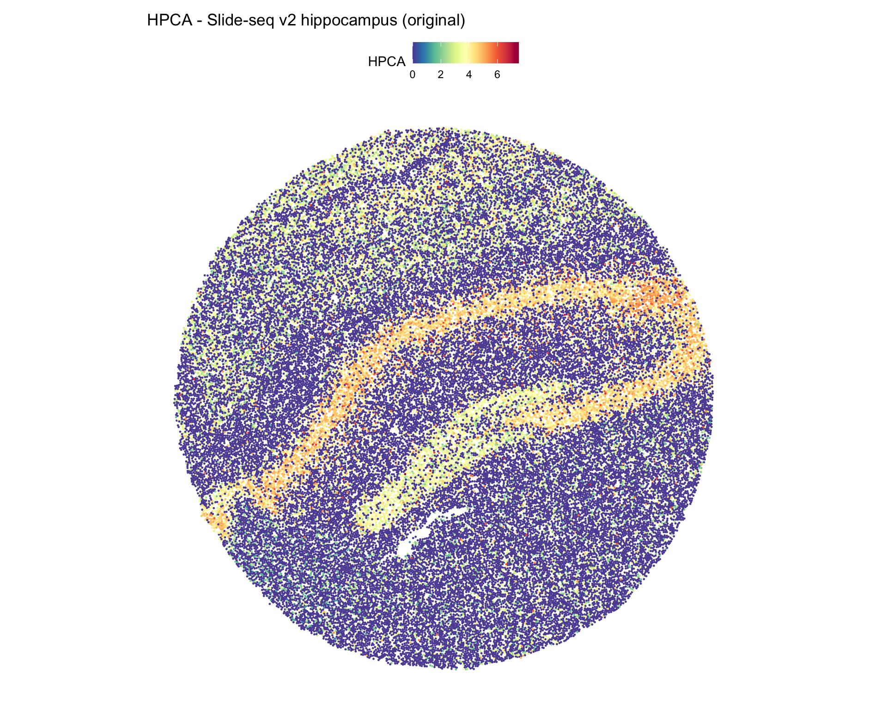
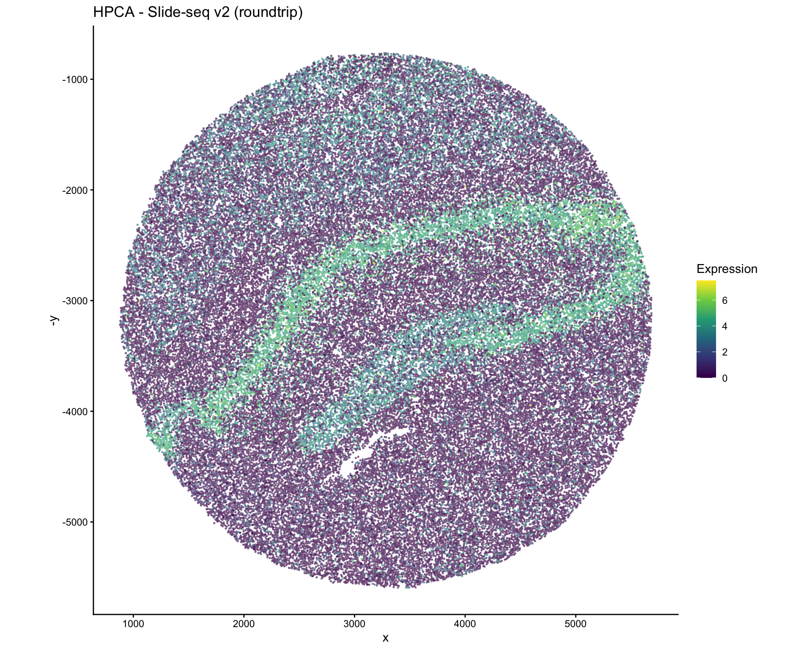
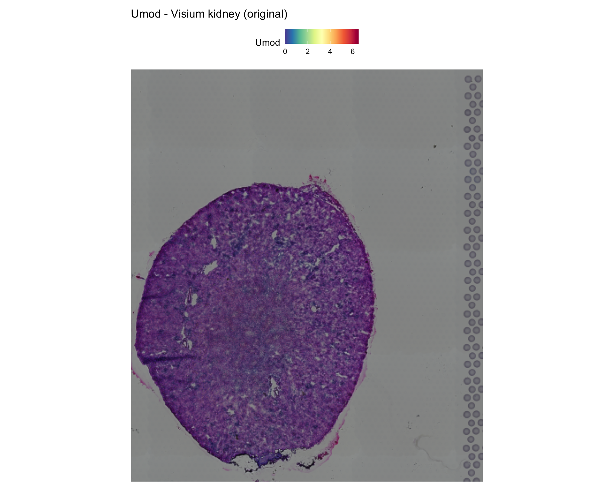

Spatial Technologies: Slide-seq, Visium HD, and Others
Source:vignettes/spatial-technologies.Rmd
spatial-technologies.RmdOverview
Spatial transcriptomics encompasses a diverse set of technologies, each with distinct coordinate systems, resolutions, and data structures. scConvert supports conversion of spatial data from all technologies that produce Seurat objects or h5ad files.
This vignette covers:
- Slide-seq v2 (bead-based, continuous coordinates)
- Visium / Visium HD (spot-based, gridded coordinates)
- Xenium / MERFISH / CosMx (subcellular, molecule-based)
- CODEX / Stereo-seq (imaging-based)
Slide-seq v2: Mouse Hippocampus
Slide-seq uses DNA barcoded beads on a surface to capture spatial transcriptomes with near-cellular resolution (~10 um).
library(SeuratData)
ss <- UpdateSeuratObject(LoadData("ssHippo"))
ss <- NormalizeData(ss, verbose = FALSE)
cat("Technology: Slide-seq v2\n")
#> Technology: Slide-seq v2
cat("Beads:", ncol(ss), "\n")
#> Beads: 53173
cat("Genes:", nrow(ss), "\n")
#> Genes: 23264
cat("Images:", Images(ss), "\n")
#> Images: imageVisualize original
SpatialFeaturePlot(ss, features = "HPCA", pt.size.factor = 1) +
ggtitle("HPCA - Slide-seq v2 hippocampus (original)")
Convert to h5ad and back
h5ad_path <- tempfile(fileext = ".h5ad")
SeuratToH5AD(ss, h5ad_path, overwrite = TRUE, verbose = FALSE)
ss_rt <- LoadH5AD(h5ad_path, verbose = FALSE)
cat("Roundtrip beads:", ncol(ss_rt), "/", ncol(ss), "\n")
#> Roundtrip beads: 53173 / 53173
cat("Roundtrip genes:", nrow(ss_rt), "/", nrow(ss), "\n")
#> Roundtrip genes: 23264 / 23264Verify expression
common_c <- intersect(colnames(ss), colnames(ss_rt))
common_g <- intersect(rownames(ss), rownames(ss_rt))
set.seed(42)
sc <- sample(common_c, min(200, length(common_c)))
sg <- sample(common_g, min(100, length(common_g)))
corr <- cor(
as.numeric(GetAssayData(ss, layer = "data")[sg, sc]),
as.numeric(GetAssayData(ss_rt, layer = "data")[sg, sc])
)
cat("Expression correlation:", corr, "\n")
#> Expression correlation: 1Visualize roundtripped coordinates
# Slide-seq coordinates are continuous (not gridded)
tryCatch({
SpatialFeaturePlot(ss_rt, features = "HPCA", pt.size.factor = 1) +
ggtitle("HPCA - Slide-seq v2 (roundtrip)")
}, error = function(e) {
if (!is.null(ss_rt@meta.data$spatial_x)) {
df <- data.frame(
x = ss_rt@meta.data$spatial_x,
y = ss_rt@meta.data$spatial_y,
expr = as.numeric(GetAssayData(ss_rt, layer = "data")["HPCA", ])
)
ggplot(df, aes(x = x, y = -y, color = expr)) +
geom_point(size = 0.3, alpha = 0.5) +
scale_color_viridis_c() +
labs(title = "HPCA - Slide-seq v2 (roundtrip)", color = "Expression") +
theme_classic() + coord_fixed()
}
})
Visium: Mouse Kidney
A second Visium example with a different tissue:
library(SeuratData)
# stxKidney uses the legacy SliceImage class; reconstruct as VisiumV2
data("stxKidney", package = "stxKidney.SeuratData")
counts <- stxKidney@assays[["Spatial"]]@counts
kidney <- CreateSeuratObject(counts = counts, assay = "Spatial")
kidney <- NormalizeData(kidney, verbose = FALSE)
# Reconstruct VisiumV2 from SliceImage
old_img <- stxKidney@images[["image"]]
sf <- old_img@scale.factors
scales <- scalefactors(spot = sf[["spot"]], fiducial = sf[["fiducial"]],
hires = sf[["hires"]], lowres = sf[["lowres"]])
coord_df <- data.frame(
imagerow = old_img@coordinates[, "imagerow"],
imagecol = old_img@coordinates[, "imagecol"],
row.names = rownames(old_img@coordinates)
)
fov <- CreateFOV(coords = coord_df, type = "centroids",
radius = sf[["spot"]], assay = "Spatial", key = "image_")
v2 <- new(Class = "VisiumV2", image = old_img@image, scale.factors = scales,
molecules = fov@molecules, boundaries = fov@boundaries,
coords_x_orientation = "horizontal", assay = "Spatial", key = "image_")
v2 <- v2[colnames(kidney)]
kidney[["image"]] <- v2
cat("Technology: 10x Visium\n")
#> Technology: 10x Visium
cat("Spots:", ncol(kidney), "\n")
#> Spots: 1438
cat("Genes:", nrow(kidney), "\n")
#> Genes: 31053
# Use a kidney marker gene
kidney_markers <- intersect(c("Umod", "Slc12a1", "Nphs2"), rownames(kidney))
if (length(kidney_markers) > 0) {
SpatialFeaturePlot(kidney, features = kidney_markers[1], pt.size.factor = 1.5) +
ggtitle(paste0(kidney_markers[1], " - Visium kidney (original)"))
}
h5ad_path <- tempfile(fileext = ".h5ad")
SeuratToH5AD(kidney, h5ad_path, overwrite = TRUE, verbose = FALSE)
kidney_rt <- LoadH5AD(h5ad_path, verbose = FALSE)
common_c <- intersect(colnames(kidney), colnames(kidney_rt))
common_g <- intersect(rownames(kidney), rownames(kidney_rt))
set.seed(42)
sc <- sample(common_c, min(200, length(common_c)))
sg <- sample(common_g, min(100, length(common_g)))
corr <- cor(
as.numeric(GetAssayData(kidney, layer = "data")[sg, sc]),
as.numeric(GetAssayData(kidney_rt, layer = "data")[sg, sc])
)
cat("Expression correlation:", corr, "\n")
#> Expression correlation: 1
cat("Spots preserved:", ncol(kidney_rt), "/", ncol(kidney), "\n")
#> Spots preserved: 1438 / 1438Spatial technology compatibility matrix
| Technology | Coordinate Type | Image? | scConvert Support | Tested |
|---|---|---|---|---|
| 10x Visium | Gridded spots | H&E tissue | Full (VisiumV2) | stxBrain, stxKidney |
| 10x Visium HD | Dense grid | H&E tissue | Coordinates + image | Via h5ad |
| Slide-seq v2 | Continuous beads | No | Coordinates | ssHippo |
| 10x Xenium | Subcellular molecules | DAPI/IF | Coordinates via FOV | Via h5ad |
| MERFISH (Vizgen) | Subcellular molecules | DAPI | Coordinates via FOV | Via h5ad |
| CosMx (NanoString) | Subcellular molecules | Morphology | Coordinates via FOV | Via h5ad |
| CODEX (Akoya) | Cell centroids | Fluorescence | Coordinates | Via h5ad |
| Stereo-seq (BGI) | Continuous spots | H&E | Coordinates | Via h5ad |
| MERSCOPE | Subcellular | DAPI | Coordinates via FOV | Via h5ad |
How spatial data is stored in h5ad
All spatial technologies store coordinates in
obsm/spatial as an N x 2 (or N x 3) matrix:
obsm/
spatial: float64 array (n_cells x 2) # [x, y] coordinates
uns/
spatial/
{library_id}/
scalefactors/ # Visium only
spot_diameter_fullres: float
tissue_hires_scalef: float
tissue_lowres_scalef: float
images/ # Visium only
hires: uint8 array (H x W x 3)
lowres: uint8 array (H x W x 3)Key difference by technology:
-
Visium: Has both
obsm/spatialANDuns/spatial(with images and scale factors) -
Slide-seq: Has
obsm/spatialonly (no tissue images) -
Subcellular (Xenium, MERFISH, CosMx): Has
obsm/spatialfor cell centroids; molecule coordinates may be stored separately
scConvert’s spatial detection logic
scConvert automatically detects the spatial technology:
- If
uns/spatial/{lib}/scalefactors/tissue_hires_scalefexists -> Visium - If coordinates are gridded (many shared X/Y values) -> Visium (fallback)
- If coordinates are continuous -> Slide-seq/Generic
- If molecule-level data exists -> FOV (generic spatial)
Working with non-standard spatial h5ad files
For h5ad files from technologies not directly tested:
# Load any h5ad with spatial coordinates
obj <- LoadH5AD("spatial_data.h5ad")
# Check if spatial data was detected
cat("Images:", Images(obj), "\n")
cat("Has spatial_x:", "spatial_x" %in% colnames(obj[[]]), "\n")
# If spatial coordinates are in metadata, create manual plot
if ("spatial_x" %in% colnames(obj[[]])) {
library(ggplot2)
df <- data.frame(
x = obj@meta.data$spatial_x,
y = obj@meta.data$spatial_y,
cluster = obj@meta.data$seurat_clusters
)
ggplot(df, aes(x = x, y = -y, color = cluster)) +
geom_point(size = 0.5) +
theme_classic() + coord_fixed()
}Session Info
sessionInfo()
#> R version 4.5.2 (2025-10-31)
#> Platform: aarch64-apple-darwin20
#> Running under: macOS Tahoe 26.3
#>
#> Matrix products: default
#> BLAS: /System/Library/Frameworks/Accelerate.framework/Versions/A/Frameworks/vecLib.framework/Versions/A/libBLAS.dylib
#> LAPACK: /Library/Frameworks/R.framework/Versions/4.5-arm64/Resources/lib/libRlapack.dylib; LAPACK version 3.12.1
#>
#> locale:
#> [1] en_US.UTF-8/en_US.UTF-8/en_US.UTF-8/C/en_US.UTF-8/en_US.UTF-8
#>
#> time zone: America/Indiana/Indianapolis
#> tzcode source: internal
#>
#> attached base packages:
#> [1] stats graphics grDevices utils datasets methods base
#>
#> other attached packages:
#> [1] ggplot2_4.0.2 scConvert_0.1.0
#> [3] Seurat_5.4.0 SeuratObject_5.3.0
#> [5] sp_2.2-1 stxKidney.SeuratData_0.1.0
#> [7] stxBrain.SeuratData_0.1.2 ssHippo.SeuratData_3.1.4
#> [9] pbmcref.SeuratData_1.0.0 pbmcMultiome.SeuratData_0.1.4
#> [11] pbmc3k.SeuratData_3.1.4 panc8.SeuratData_3.0.2
#> [13] cbmc.SeuratData_3.1.4 SeuratData_0.2.2.9002
#>
#> loaded via a namespace (and not attached):
#> [1] RColorBrewer_1.1-3 jsonlite_2.0.0 magrittr_2.0.4
#> [4] spatstat.utils_3.2-1 farver_2.1.2 rmarkdown_2.30
#> [7] fs_1.6.6 ragg_1.5.0 vctrs_0.7.1
#> [10] ROCR_1.0-12 spatstat.explore_3.7-0 htmltools_0.5.9
#> [13] sass_0.4.10 sctransform_0.4.3 parallelly_1.46.1
#> [16] KernSmooth_2.23-26 bslib_0.10.0 htmlwidgets_1.6.4
#> [19] desc_1.4.3 ica_1.0-3 plyr_1.8.9
#> [22] plotly_4.12.0 zoo_1.8-15 cachem_1.1.0
#> [25] igraph_2.2.2 mime_0.13 lifecycle_1.0.5
#> [28] pkgconfig_2.0.3 Matrix_1.7-4 R6_2.6.1
#> [31] fastmap_1.2.0 MatrixGenerics_1.22.0 fitdistrplus_1.2-6
#> [34] future_1.69.0 shiny_1.13.0 digest_0.6.39
#> [37] S4Vectors_0.48.0 patchwork_1.3.2 tensor_1.5.1
#> [40] RSpectra_0.16-2 irlba_2.3.7 GenomicRanges_1.62.1
#> [43] textshaping_1.0.4 labeling_0.4.3 progressr_0.18.0
#> [46] spatstat.sparse_3.1-0 httr_1.4.8 polyclip_1.10-7
#> [49] abind_1.4-8 compiler_4.5.2 withr_3.0.2
#> [52] bit64_4.6.0-1 S7_0.2.1 fastDummies_1.7.5
#> [55] MASS_7.3-65 rappdirs_0.3.4 tools_4.5.2
#> [58] lmtest_0.9-40 otel_0.2.0 httpuv_1.6.16
#> [61] future.apply_1.20.2 goftest_1.2-3 glue_1.8.0
#> [64] nlme_3.1-168 promises_1.5.0 grid_4.5.2
#> [67] Rtsne_0.17 cluster_2.1.8.2 reshape2_1.4.5
#> [70] generics_0.1.4 hdf5r_1.3.12 gtable_0.3.6
#> [73] spatstat.data_3.1-9 tidyr_1.3.2 data.table_1.18.2.1
#> [76] XVector_0.50.0 BiocGenerics_0.56.0 BPCells_0.2.0
#> [79] spatstat.geom_3.7-0 RcppAnnoy_0.0.23 ggrepel_0.9.7
#> [82] RANN_2.6.2 pillar_1.11.1 stringr_1.6.0
#> [85] spam_2.11-3 RcppHNSW_0.6.0 later_1.4.8
#> [88] splines_4.5.2 dplyr_1.2.0 lattice_0.22-9
#> [91] bit_4.6.0 survival_3.8-6 deldir_2.0-4
#> [94] tidyselect_1.2.1 miniUI_0.1.2 pbapply_1.7-4
#> [97] knitr_1.51 gridExtra_2.3 Seqinfo_1.0.0
#> [100] IRanges_2.44.0 scattermore_1.2 stats4_4.5.2
#> [103] xfun_0.56 matrixStats_1.5.0 UCSC.utils_1.6.1
#> [106] stringi_1.8.7 lazyeval_0.2.2 yaml_2.3.12
#> [109] evaluate_1.0.5 codetools_0.2-20 tibble_3.3.1
#> [112] cli_3.6.5 uwot_0.2.4 xtable_1.8-8
#> [115] reticulate_1.45.0 systemfonts_1.3.1 jquerylib_0.1.4
#> [118] GenomeInfoDb_1.46.2 dichromat_2.0-0.1 Rcpp_1.1.1
#> [121] globals_0.19.0 spatstat.random_3.4-4 png_0.1-8
#> [124] spatstat.univar_3.1-6 parallel_4.5.2 pkgdown_2.2.0
#> [127] dotCall64_1.2 listenv_0.10.0 viridisLite_0.4.3
#> [130] scales_1.4.0 ggridges_0.5.7 purrr_1.2.1
#> [133] crayon_1.5.3 rlang_1.1.7 cowplot_1.2.0